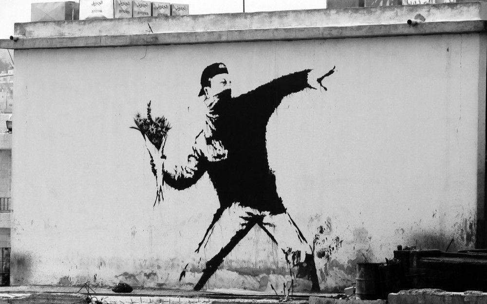

THE STORY OF BANKSY
By: bla bla, 11/11/2022
In 2010, Time magazine included the British artist Banksy, known for his graffiti, painting, activism, filmmaking, and provocateur actions, on its list of the world's 100 most influential people alongside names such as Barack Obama, Steve Jobs, and Lady Gaga. Banksy submitted a picture of himself with a paper bag over his head for the magazine. Though many of his fans don't want to know his true identity, they do follow his journey from an outlaw graffiti artist in Bristol, England in the 90s to an artist whose work now sells for hundreds of thousands of dollars at auction houses in the UK and US. He has since "bombed" cities from Vienna to San Francisco, Barcelona to Paris, and Detroit with his art, expanding from street graffiti to canvas paintings, sculptures, and even filmmaking, with the documentary Exit Through the Gift Shop being nominated for an Academy Award.
{kind=link}
Banksy's organization, Pest Control, which is responsible for authenticating his artwork, also serves to protect his anonymity. Banksy remains elusive, communicating primarily through e-mail and rarely giving face-to-face interviews, the last of which was in 2003. Despite his concealed identity, Banksy promotes a direct relationship between an artist and their audience. He has stated, “There’s a whole new audience out there, and it’s never been easier to sell [one’s art]. You don’t have to go to college, drag ’round a portfolio, mail off transparencies to snooty galleries or sleep with someone powerful, all you need now is a few ideas and a broadband connection. This is the first time the essentially bourgeois world of art has belonged to the people. We need to make it count.”
Banksy, who at the time was experimenting with different names, including Robin Banx, made his first foray into graffiti in the working-class, predominantly white, and unwelcoming district of Barton Hill in Bristol in the 1980s. It was a part of town where his father had been beaten up as a child. He eventually settled on the shortened moniker Banksy, which was more memorable and easier to write on a wall.
Around this time, he also developed his distinctive stencil style. He recounts that when he was 18, while painting a train with friends, they were interrupted by the police and everyone ran. Banksy, who was left behind, was hiding under a dump truck when he realized he needed to cut his painting time in half or give it up. It was then that he had the idea to copy the stenciled plate on the bottom of the fuel tank and make each letter three feet high. This style allowed him to work quickly and efficiently. He also appreciates the political edge of stencil graffiti, which he believes has been used in the past to start revolutions and stop wars.

Banksy melds street-fighting passion and pacifist ardor in his image of a protester whose Molotov cocktail morphs into a bouquet.
— Pixelbully / Alamy
In the early days of his career, Banksy's drawings had a primitive feel to them. One of his favorite pieces can be found at the Pierced Up tattoo parlor in Bristol, where a wall painting depicts giant wasps with television sets attached as weapons, diving towards a vase of flowers. The manager of the parlor, Maryanne Kemp, recalls Banksy's all-night painting session. By 1999, Banksy had moved to London and began to retreat into anonymity. He avoided the authorities, but also found that anonymity created a buzz around his work. As his street art spread across Britain, he was compared to artists such as Jean-Michel Basquiat and Keith Haring.
{kind=link}
Banksy’s first London exhibition, so to speak, took place in Rivington Street in 2001, when he and fellow street artists convened in a tunnel near a pub. “We hung up some decorators’ signs nicked off a building site,” he later wrote, “and painted the walls white wearing overalls. We got the artwork up in 25 minutes and held an opening party later that week with beers and some hip-hop pumping out of the back of a Transit van. About 500 people turned up to an opening which had cost almost nothing to set up.”
In July 2003, Banksy mounted "Turf War", his breakthrough exhibition. Staged in a former warehouse in Hackney, the show dazzled the London art scene with its carnival-atmosphere display, which featured a live heifer, its hide embellished with a portrait of Andy Warhol, as well as Queen Elizabeth II in the guise of a chimpanzee.
Late that year, a tall, bearded figure in a dark overcoat, scarf and floppy hat strolled into Tate Britain clutching a large paper bag. He made his way to Room 7 on the second level. He then dug out his own picture, an unsigned oil painting of a rural scene he had found in a London street market. Across the canvas, which he had titled "Crimewatch UK Has Ruined the Countryside for All of Us", he had stenciled blue-and-white police crime-scene tape.

On the wall at the West Bank, he meditated on a power dynamic upended, as a child frisks a soldier.
— Nick Fielding / Alamy
For 17 months, Banksy, always hiding his identity, brought his unique style of playful performance art to renowned museums, including the Louvre. He managed to display an altered image of the Mona Lisa with a smiley-face sticker on it. Additionally, in New York City, he secretly placed a small portrait of a woman, which he had found and altered to show her wearing a gas mask, on a wall in the Metropolitan Museum of Art. The museum's spokeswoman, Elyse Topalian, commented on the incident by saying, "It would take more than a piece of Scotch tape to get a work of art into the Met."
In 2005, Banksy achieved worldwide fame for his work in Israel. He painted a series of powerful images on the West Bank's concrete barrier, which was built as an attempt to prevent suicide bombings. The images included a young girl holding balloons being lifted over the wall, two children with a bucket and spade longing for a beach, and a boy with a ladder leaned against the wall, all of which served as poignant reflections on the concept of escape.
Banksy's exhibition "Crude Oils" in London, held two months after his return from Israel, elevated the art of subversion with reworked versions of Claude Monet's Water Lilies featuring trash and shopping carts, and Edward Hopper's Night Hawks with a street hooligan breaking the window. The show also included live rats scurrying around the gallery. Banksy's next exhibition, "Barely Legal" in Los Angeles in September 2006, drew crowds of 30,000, including Brad Pitt. The anonymous artist said Hollywood was the perfect place for ambition as it "honors their heroes by writing their names on the pavement to be walked on by fat people and peed on by dogs." Pitt praised Banksy's anonymity, saying "I think that's great."
The exhibition centerpiece was an 8,000-pound live elephant, slathered in red paint and overlaid with a fleur-de-lis pattern. L.A.’s outspoken animal-rights advocates were incensed; the authorities ordered the paint to be washed off. Fliers distributed to the glittering crowd made the point that “There’s an elephant in the room...20 billion people live below the poverty line.”
Before the fall of Lehman Brothers in February 2008, a charity art auction, organized by Bono, Damien Hirst, Sotheby's and the Gagosian Gallery, was held in February at Sotheby's in New York. Attended by the city's wealthy elite, the event raised a record-breaking $42.5 million for AIDS programs in Africa. Banksy’s Ruined Landscape a pastoral scene with the slogan “This is not a photo opportunity” pasted across it, sold for $385,000. A Vandalized Phone Box, an actual British phone booth bent nearly 90 degrees and bleeding red paint where a pickax had pierced it, commanded $605,000. Three years later the buyer was revealed to be Mark Getty, grandson of J. Paul Getty.
In 2010, Banksy ventured into film with "Exit Through the Gift Shop," a satirical documentary on the creation and commercialization of street art. The New York Times called it "a trompe l'oeil" - a film that appears to be a documentary but feels like a clever trick. It was shortlisted for an Oscar in the documentary category. In 2011, Banksy's works were prominently featured in the Museum of Contemporary Art, Los Angeles' comprehensive survey of street art and graffiti, showcasing the "Banksy effect" - the artist's ability to bring outsider urban art into the mainstream and make it profitable.
Banksy's subversiveness wanes as prices soar, making it harder to stay true to his roots. The 2011 Stokes Croft riots in Bristol serve as a warning. The riots began after police intervened in a protest against a new Tesco Metro store and squatters in a nearby building. Police claimed they acted on information about petrol bomb making. Banksy responded by selling a £5 poster of a "Tesco Value Petrol Bomb" with proceeds going to a local revival group. This move earned criticism as Banksy was dubbed a "Champagne Socialist".
He rebuffs this criticism, as he stated in an email to The New Yorker, "I give away thousands of paintings for free. It's not feasible to create art addressing poverty while also hoarding wealth." He also offers high-res images of his work for free download on his Website. He recognizes the irony of anti-establishment art fetching high prices and comments, "Capitalism accommodates even its enemies. The discontent industry is thriving. How much cake does Michael Moore eat?".
As Banksy's art gains value, some of his creations hold a bittersweet sentiment. Many of his works are only remembered through photos or are gone, with 40 out of 52 documented street art pieces in London disappearing. The latest mystery surrounding Banksy involves two Olympic-themed pieces posted online during the London Games, depicting a javelin thrower with a missile and a pole vaulter jumping over a barbed-wire fence. However, their locations remain unknown, adding to Banksy's enigma. Two new Banksy pieces are waiting to be discovered in London.
{kind=link}
{kind=link}
In 2005, Banksy achieved worldwide fame for his work in Israel. He painted a series of powerful images on the West Bank's concrete barrier, which was built as an attempt to prevent suicide bombings. The images included a young girl holding balloons being lifted over the wall, two children with a bucket and spade longing for a beach, and a boy with a ladder leaned against the wall, all of which served as poignant reflections on the concept of escape.
Banksy's exhibition "Crude Oils" in London, held two months after his return from Israel, elevated the art of subversion with reworked versions of Claude Monet's Water Lilies featuring trash and shopping carts, and Edward Hopper's Night Hawks with a street hooligan breaking the window. The show also included live rats scurrying around the gallery. Banksy's next exhibition, "Barely Legal" in Los Angeles in September 2006, drew crowds of 30,000, including Brad Pitt. The anonymous artist said Hollywood was the perfect place for ambition as it "honors their heroes by writing their names on the pavement to be walked on by fat people and peed on by dogs." Pitt praised Banksy's anonymity, saying "I think that's great."
{kind=link}
{kind=link}
The exhibition centerpiece was an 8,000-pound live elephant, slathered in red paint and overlaid with a fleur-de-lis pattern. L.A.’s outspoken animal-rights advocates were incensed; the authorities ordered the paint to be washed off. Fliers distributed to the glittering crowd made the point that “There’s an elephant in the room...20 billion people live below the poverty line.”
Before the fall of Lehman Brothers in February 2008, a charity art auction, organized by Bono, Damien Hirst, Sotheby's and the Gagosian Gallery, was held in February at Sotheby's in New York. Attended by the city's wealthy elite, the event raised a record-breaking $42.5 million for AIDS programs in Africa. Banksy’s Ruined Landscape a pastoral scene with the slogan “This is not a photo opportunity” pasted across it, sold for $385,000. A Vandalized Phone Box, an actual British phone booth bent nearly 90 degrees and bleeding red paint where a pickax had pierced it, commanded $605,000. Three years later the buyer was revealed to be Mark Getty, grandson of J. Paul Getty.
{kind=link}
{kind=link}
In 2010, Banksy ventured into film with "Exit Through the Gift Shop," a satirical documentary on the creation and commercialization of street art. The New York Times called it "a trompe l'oeil" - a film that appears to be a documentary but feels like a clever trick. It was shortlisted for an Oscar in the documentary category. In 2011, Banksy's works were prominently featured in the Museum of Contemporary Art, Los Angeles' comprehensive survey of street art and graffiti, showcasing the "Banksy effect" - the artist's ability to bring outsider urban art into the mainstream and make it profitable.
Banksy's subversiveness wanes as prices soar, making it harder to stay true to his roots. The 2011 Stokes Croft riots in Bristol serve as a warning. The riots began after police intervened in a protest against a new Tesco Metro store and squatters in a nearby building. Police claimed they acted on information about petrol bomb making. Banksy responded by selling a £5 poster of a "Tesco Value Petrol Bomb" with proceeds going to a local revival group. This move earned criticism as Banksy was dubbed a "Champagne Socialist".
He rebuffs this criticism, as he stated in an email to The New Yorker, "I give away thousands of paintings for free. It's not feasible to create art addressing poverty while also hoarding wealth." He also offers high-res images of his work for free download on his Website. He recognizes the irony of anti-establishment art fetching high prices and comments, "Capitalism accommodates even its enemies. The discontent industry is thriving. How much cake does Michael Moore eat?".
As Banksy's art gains value, some of his creations hold a bittersweet sentiment. Many of his works are only remembered through photos or are gone, with 40 out of 52 documented street art pieces in London disappearing. The latest mystery surrounding Banksy involves two Olympic-themed pieces posted online during the London Games, depicting a javelin thrower with a missile and a pole vaulter jumping over a barbed-wire fence. However, their locations remain unknown, adding to Banksy's enigma. Two new Banksy pieces are waiting to be discovered in London.
{kind=link}
{kind=link}